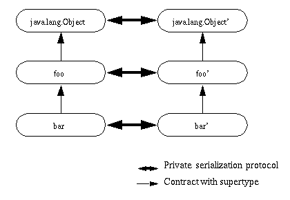

| 목차 | 전의 항목 | 다음의 항목 | Java 객체 직렬화 스펙 Version 6.0 |
|
제 5 장 |
JavaTM 객체가, 직렬화를 사용해 상태를 파일에 보관하거나 덩어리로서 데이타베이스에 보관하거나 하는 경우, 그 데이터를 읽어들이는 클래스의 버젼이 그 데이터를 기입한 버젼과 다를 가능성이 있습니다.버젼 관리에는, 클래스의 동일성에 관계되어, 몇개의 근본적인 문제가 있습니다. 예를 들어, 호환성이 있는 변경이란 무엇인가, 라고 하는 문제가 있습니다. 「호환성이 있는 변경」이란, 클래스와 그 호출원과의 사이의 규약에 영향을 주지 않는 변경입니다.
이 항에서는, 목표, 전제 조건, 및 해결책에 대해 기술합니다. 이 해결책은, 변경할 수 있는 것을 제한해, 기구를 신중하게 선택하는 것에 의해, 이 문제에 대처하려고 하는 것입니다.
여기서 가리키는 해결책에서는, 필드의 추가나 클래스의 추가에 의해 전개하는 클래스를 「자동적으로」처리하는 기구를 나타냅니다. 직렬화에서는, 버젼 관리는, 버젼 마다 클래스 고유의 메소드를 구현하는 일 없이 행해집니다. 스트림 형식은, 클래스 고유의 메소드를 호출하는 일 없이 처리 (횡단(traverse))됩니다.
목표는 다음과 같습니다.
- 다른 가상 머신으로 가동하는 다른 버젼의 클래스간에 있어서의 쌍방향의 통신을, 다음의 방법으로 지원한다
- JavaTM 클래스가, 같은 클래스의 낡은 버젼으로 기입해진 스트림을 읽어들일 수 있는 것 같은 기구를 정의한다
- JavaTM 클래스가, 같은 클래스의 낡은 버젼으로 읽히는 것을 의도한 스트림을 기입할 수 있는 것 같은 기구를 정의한다
- 지속성과 RMI 의 디폴트의 직렬화를 제공한다
- 간단한 케이스에서는 성능이 좋고, 간결한 스트림이 작성되기 (위해)때문에, RMI 로 직렬화를 사용할 수 있다
- 스트림을 기입하는데 사용된 클래스와 완전히 같은 클래스를 식별해, 로드할 수 있다
- 버젼 관리하지 않는 클래스에 대해 오버헤드를 낮게 유지한다
- 스트림에 보관되고 있는 객체 고유의 메소드를 호출하지 않고 , 스트림의 처리 (traversal)가 가능한 스트림 형식을 사용한다
전제 조건은 다음과 같습니다.
- 직렬화 가능 클래스는, 그 스트림 형식을 제어해, 그 목표를 달성할 필요가 있으므로, 버젼 관리는 직렬화 가능 클래스에만 적용된다. 외부화 가능 클래스는, 외부 형식에 결합되는 그것 독자적인 버젼 관리를 실시한다
- 모든 데이터나 객체는, 기입해진 순서로 스트림로부터 읽히거나 거기서 스킵 되거나 하지 않으면 안 된다
- 클래스는, 개별적으로 전개하거나 슈퍼타입이나 subtype과 협조해 전개한다
- 클래스는 이름으로 식별된다. 같은 이름의 2 개의 클래스가 다른 버젼이거나 다른 클래스에서 만나거나 하는 일이 있다. 이 차이는, 각각의 인터페이스나, 각각의 인터페이스의 해시를 비교하면 구별할 수가 있다
- 디폴트의 직렬화에서는, 형태의 변환은 행해지지 않는다
- 스트림 형식에서는, 선형 순서의 형태 변경만을 지원하면 자주(잘), 형태의 임의의 분기를 지원할 필요는 없다
클래스의 전개에 대해, 비전개 클래스에 의해 설정된 규약을 유지하는 것은, 전개된 (나머지의 버젼의) 클래스의 책임입니다. 이것은, 2 개(살)의 형태를 취합니다. 우선, 전개된 클래스는, 원의 버젼에 의해 주어진 인터페이스에 관한 기존의 전제 조건을 부술 수 없습니다. 거기에 따라, 전개된 클래스를 원의 클래스 대신에 사용할 수가 있습니다. 다음에, 원의 (또는 전의) 버젼과 통신할 때, 전개된 클래스는, 이전의 버젼이 비전개 클래스의 규약을 계속해 채울 수 있을 뿐(만큼)의, 충분하고 동등한 정보를 주지 않으면 안됩니다.
여기서 설명한 목적을 위해서(때문에), 각 클래스는, 그 슈퍼타입에 의해 정의된 인터페이스 또는 규약을 구현해, 확장합니다. 클래스의 새로운 버젼, 예를 들어,
foo'는,foo를 위한 규약을 유지할 필요가 있어, 인터페이스를 확장하거나 그 구현을 수정하거나 할 수가 있습니다.직렬화를 개입시킨 객체간의 통신은, 그러한 인터페이스에 의해 정의되는 규약에는 포함되어 있지 않습니다. 직렬화는, 구현간의 사적인 프로토콜입니다. 각 구현이 그 클라이언트에 의해 기대되는 규약에 따르도록(듯이) 충분한 교환을 하는 것은, 그 구현의 책임입니다.
JavaTM 언어 스펙의 제 13 장에, JavaTM 클래스가 전개할 때의 binary level compatibility의 설명이 있습니다. binary level compatibility의 유연성의 대부분은, 클래스, 인터페이스, 필드, 메소드등의 이름의 상징적 참조를, 늦은 단계에서 바인드 하는 것에 기인하고 있습니다.직렬화 된 객체 스트림의 버젼 관리를 설계하는 경우의 기본적인 항목을, 다음에 나타냅니다.
- 디폴트의 직렬화 기구는, 스트림의 필드와 가상 머신의 대응하는 클래스의 필드를 바인드 하는데 상징적 모델을 사용합니다
- 스트림내에서 참조되는 각 클래스는, 스스로의 클래스, 그 슈퍼타입, 및 스트림에 기입해지는 각 직렬화 필드의 타입과 이름을 일의에 식별합니다. 필드의 순서는, 우선 원시형의 필드가 필드명으로 소트 되어 다음에 객체 필드가 필드명으로 소트 되어 결정됩니다
- 각 클래스의 스트림에 출현하는 데이터는, 필수 데이터 (객체의 직렬화 가능 필드에 직접 대응한다)와 임의 데이터 (프리미티브(primitive)이나 객체의 임의의 순서로 구성된다)의 2 종류로 나눌 수 있습니다. 스트림 형식은, 필수 데이터 및 임의 데이터를 스트림내에서 생성하는 방법을 정의합니다. 이 정의에 의해, 필요에 따라서 클래스 전체, 필수 데이터, 또는 임의 데이터를 스킵 하는 것이 가능합니다
- 필수 데이터는, 클래스 기술자로 정의된 순서로 소트 된, 객체의 필드로 구성됩니다
- 임의 데이터는, 스트림에 기입해져 클래스의 필드에 직접 대응하지 않습니다. 클래스 자체는, 옵션 정보의 길이, 타입, 및 버젼 관리를 담당합니다.
- 클래스를 정의하면(자), 그
writeObject/readObject메소드는 클래스 상태를 읽어들여/기입하기 위한 디폴트의 기구에 잡아 대신합니다. 이러한 메소드는, 클래스의 임의 데이터의 읽기 및 기입을 실행합니다. 필수 데이터에의 기입은defaultWriteObject의 호출을 개입시켜, 필수 데이터의 읽기는defaultReadObject의 호출을 개입시켜 행해집니다.- 각 클래스의 스트림 형식의 식별은, 스트림 고유 식별자 (SUID)를 사용해 행해집니다. 디폴트에서는, 스트림 고유 식별자는, 클래스의 해시입니다. 이후의 버젼의 클래스에서는, 모두, 호환성이 있는 스트림 고유 식별자 (SUID)를 선언할 필요가 있습니다. 이것에 의해, 같은 이름을 가지는 복수의 클래스를, 부주의로 단일의 클래스의 버젼으로 간주해 버리는 것을 막을 수 있습니다.
ObjectOutputStream및ObjectInputStream의 subtype에는,annotateClass메소드를 사용해, 클래스를 식별하는 독자적인 정보를 포함할 수가 있습니다. 예를 들어,MarshalOutputStream는 클래스의 URL 를 묻고 있습니다.
이 개념을 사용하면, 전개하는 클래스의 다양한 케이스에 대해, 설계상 어떻게 대응하는지를 설명할 수가 있습니다. 이러한 케이스는, 클래스의 어떤 것인가의 버젼에 의해 기입해진 스트림의 관점으로부터 기술됩니다. 스트림이 같은 클래스의 같은 버젼으로 읽혔을 경우에는, 정보나 기능이 없어질 것은 없습니다. 이 스트림은, 원의 클래스에 관한 유일한 정보원입니다. 그 클래스 기술은, 그것이 원의 클래스 기술의 부분집합인 한, 그 스트림의 데이터와 복구 이루어지는 클래스의 버젼을 일치시키는데 충분한 정보입니다.이러한 기술은, 클래스의 이전의 버젼이나 이후의 버젼을 복구성 하기 위해서 스트림을 읽어들인다, 라고 하는 관점으로부터의 것입니다. RPC 시스템의 용어로 하면, 이것은 「수취하는 측이 올바르게 한다」시스템입니다. 기입측은, 그 데이터를 가장 적합한 형식에서 기입하므로, 수취하는 측은, 그 정보를 해석해 필요한 부분을 추출해, 입수할 수 없는 부분을 추가할 필요가 있습니다.
클래스에 대한 호환성이 없는 변경이란, 상호 운용성의 보증을 유지할 수 없는 것 같은 변경입니다. 클래스의 전개의 과정에서 일어나는 호환성이 없는 변경에는, 다음의 것이 있습니다.
- 필드를 삭제하는 - 클래스의 필드가 삭제되면(자), 기입해진 스트림에는 그 값이 없다. 그 스트림이 이전의 클래스에 의해 읽히면(자), 스트림에 값이 없기 때문에, 그 필드의 값은 디폴트 값로 설정된다. 그러나, 이 디폴트 값는, 이전의 버젼이 그 규약을 완수하는 능력을 해치는 일이 있다
- 계층에 있어 클래스를 윗쪽 또는 하부로 이동하는 - 스트림의 데이터 순서가 올바르지 않게 되기 (위해)때문에, 이 변경은 할 수 없다
- 비 static 필드를 static 에, 또는 비 transient 필드를 transient 로 변경하는 - 디폴트의 직렬화를 전제로 하고 있는 경우, 이 변경은, 필드를 클래스로부터 삭제하는 것과 같은 것이다. 그 클래스의 이 버젼에서는, 그 데이터는 스트림에 기입해지지 않기 때문에, 그 클래스의 이전의 버젼으로 읽을 수 없다. 필드의 삭제와 같이, 이전의 버젼의 필드는 디폴트 값에 초기화되므로, 그 클래스는 예기 할 수 없는 에러가 되는 일이 있다
- 프리미티브(primitive) 필드의 선언된 형태를 변경하는 - 클래스의 각 버젼은, 데이터를 그 선언된 형태로 기입한다. 스트림의 데이터의 형태는 필드의 형태와 일치하지 않기 때문에, 클래스의 이전의 버젼이 그 필드를 읽어들이려고 하면(자) 에러가 된다
writeObject메소드 또는readObject메소드를, 디폴트의 field data의 기입해 또는 read를 실시하지 않게 변경하거나 전의 버젼이 기입해 또는 read를 실시하지 않았던 경우에 그 기입해 또는 read를 실시하도록(듯이) 변경한다. 디폴트의 field data가 스트림에 있는지 없는지는, 일관하고 있지 않으면 안 된다- 클래스를
Serializable로부터Externalizable로 변경하거나 그 반대를 행하거나 하는 것은, 호환성이 없는 변경이다. 이렇게 하면(자), 그 스트림에, 사용할 수 있는 클래스의 구현과 호환성이 없는 데이터가 들어가게 된다- 그 스트림에 사용할 수 있는 클래스의 구현과 호환성이 없는 데이터가 들어가게 되기 (위해)때문에, 클래스를 비 enum 형으로부터 enum 형으로 변경하거나 그 반대를 행하거나 한다
Serializable이나Externalizable를 없애는 것은, 호환성이 없는 변경이다. 이렇게 하면(자), 기입해졌을 때에, 그 클래스의 낡은 버젼으로 필요한 필드가 제외되게 된다writeReplace또는readResolve메소드를 클래스에 추가할 경우에, 그 동작이 클래스의 이전의 버젼과 호환성이 없는 객체를 작성하는 경우는, 호환성이 없어진다
클래스에의 호환성이 있는 변경은, 다음과 같이 처리됩니다.
- 필드의 추가 - 복구 이루어지는 클래스에 스트림에 없는 필드가 있으면(자), 객체의 그 필드는 그 형태에 대한 디폴트 값에 초기화된다. 클래스 고유의 초기화가 필요한 경우, 그 클래스는 readObject 메소드에 의해, 그 필드를 디폴트 값 이외에 설정할 수가 있다
- 클래스의 추가 - 스트림에는, 스트림에 있어서의 각 객체의 형태 계층이 있다. 스트림의 이 계층과 현재의 클래스를 비교하면, 추가의 클래스를 알 수 있다. 스트림에는, 그 객체를 초기화하기 위해서 사용할 수 있는 정보는 없기 때문에, 그 클래스의 필드는 디폴트 값에 초기화된다
- 클래스의 삭제 - 스트림의 클래스 계층과 현재의 클래스를 비교하면, 클래스가 삭제된 것을 알 수 있다. 이 경우, 그 클래스에 대응하는 필드와 객체가, 스트림로부터 읽힌다. 프리미티브(primitive) 필드는 파기되지만, 삭제된 클래스에 의해 참조되는 객체는 작성된다. 이렇게 하는 것은, 그것들이 나중에 스트림로 참조될 가능성이 있기 때문이다. 스트림이 가베지 컬렉트되거나 리셋 되거나 할 때, 그러한 객체는 가베지 컬렉트된다
writeObject/readObject메소드의 추가 - 스트림을 읽어들이는 버젼에 이러한 메소드가 있는 경우, 디폴트의 직렬화에 의해 스트림에 기입해진 필수 데이터는, 일반적으로 대로readObject에 의해 읽히지 않으면 안 된다. 이 메소드는, 임의 데이터를 읽어들이기 전에, 우선defaultReadObject를 호출할 필요가 있다.writeObject메소드는, 일반적으로 대로,defaultWriteObject를 호출해 필수 데이터를 기입하지 않으면 안 된다. 그 후, 임의 데이터를 기입할 수가 있다writeObject/readObject메소드의 삭제 - 이 스트림을 읽어들이는 클래스에 이러한 메소드가 없으면 필수 데이터는 디폴트의 초기화에 의해 읽혀 임의 데이터는 파기된다java.io.Serializable의 추가 - 이것은, 형태를 추가하는 것과 같은 것이다. 스트림에는 이 클래스에 대한 값이 없기 때문에, 그 필드는, 디폴트 값에 초기화된다. 직렬화 불능 클래스의 서브 클래스화를 지원하려면 , 그 클래스의 슈퍼타입에 인수 없음의 생성자 이 있어, 그 클래스 자신이 디폴트 값에 초기화되지 않으면 안 된다. 인수 없음의 생성자 이 없으면InvalidClassException가 throw 된다- 필드에의 액세스를 변경 - 액세스 수식자 public, package, protected, private 를 변경해도, 직렬화에 의해 그러한 필드에 값을 대입할 수 있는 것에는 영향을 주지 않는다
- 필드의 static 로부터 비 static 에, 또는 transient 로부터 비 transienst 에의 변경 - 디폴트의 직렬화로 직렬화 가능 필드를 계산하는 경우, 이 변경은, 필드를 클래스에 추가하는 것과 같은 것이다. 새로운 필드는 스트림에 기입해지지만, 그 값은 이전의 클래스에 의해 무시된다. 이것은, 직렬화에 의해 static 나 transient 의 필드에 값이 대입되지 않기 때문이다